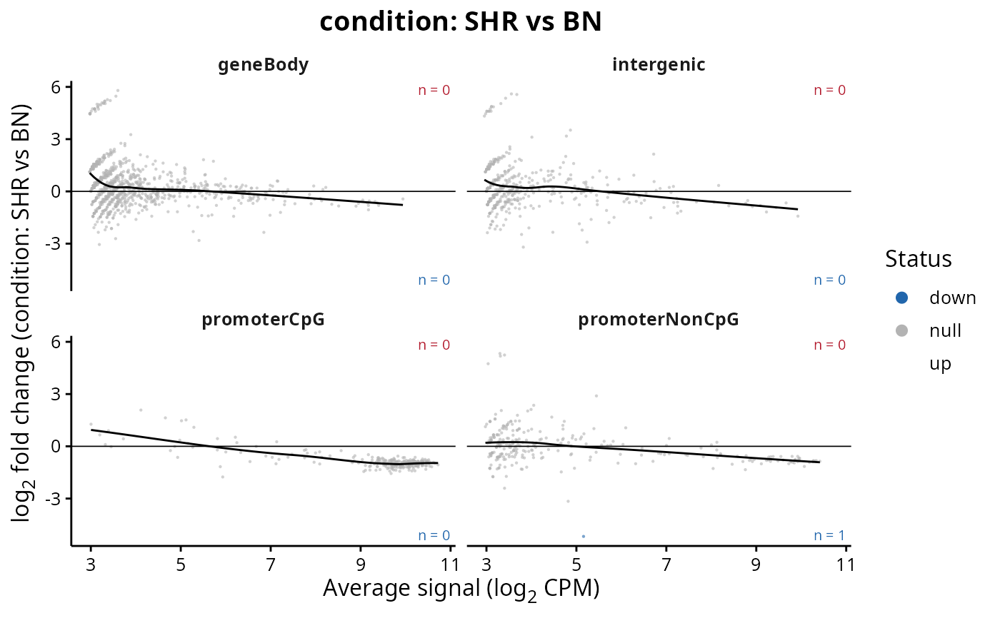
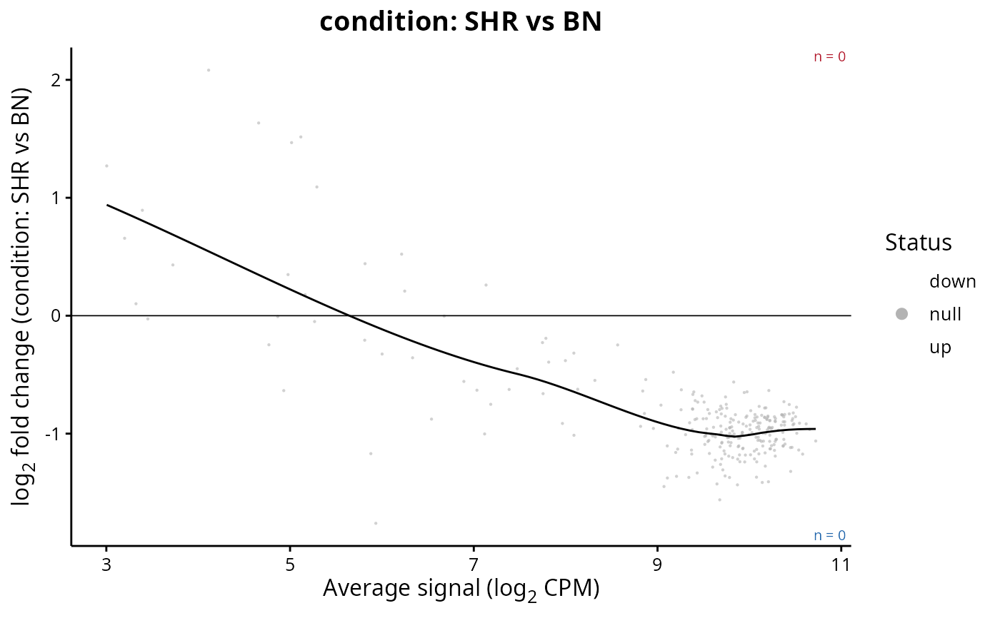

Draws the log2 fold change of a contrast against the average signal, one panel per region set, which shows whether the response depends on how much signal a region carried to begin with.
Usage
plotResultsMA(
results,
set = NULL,
contrast = NULL,
colourBy = "diff.status",
facetBySet = TRUE,
facetScales = "fixed",
FDR = NULL,
log2FC = NULL,
showCounts = TRUE,
showTrend = TRUE,
colours = NULL,
pointSize = 0.8,
maxPoints = 20000,
title = NULL,
subtitle = NULL,
legendPosition = "right",
baseSize = 12
)Arguments
- results
RegionSetDE.resultsorRegionSetDE.resultsListobject.- set
Character vector with the names of the region sets to draw. Default:
NULL, all of them.- contrast
String with the name of the contrast to draw, or its position, when
resultsholds several of them. Default:NULL.- colourBy
String with the variable driving the colour, either
"diff.status"or"region.set". Default:"diff.status".- facetBySet
Logical value to indicate whether each region set must get its own panel. Default:
TRUE.- facetScales
String with the scales of the panels, one among
"fixed","free","free_x"and"free_y". Default:"fixed".- FDR
Numeric value with the adjusted p-value cut-off used to label the points. Default:
NULL, the threshold stored in the object.- log2FC
Numeric value with the absolute log2 fold change cut-off used to label the points. Default:
NULL, the threshold stored in the object.- showCounts
Logical value to indicate whether the number of changing regions must be written in the corners of each panel, on the right hand side and on the same side of zero as the regions they count. Default:
TRUE.- showTrend
Logical value to indicate whether a loess trend must be drawn. Default:
TRUE.- colours
Named character vector with the colours. Default:
NULL.- pointSize
Numeric value with the size of the points. Default:
0.8.- maxPoints
Numeric value with the number of non-changing points drawn per panel. Default:
20000.- title
String with the title of the plot, rendered as markdown. Default:
NULL, the contrast.- subtitle
String with the subtitle of the plot, rendered as markdown. Default:
NULL.- legendPosition
String with the position of the legend. Default:
"right".- baseSize
Numeric value with the base font size. Default:
12.
Details
A trend that leaves zero at one end of the abundance range is the usual sign that the normalisation has not done its job, and it is easier to see here than on any summary statistic. This plot answers a different question from plotSetMA, which compares samples before any model is fitted: here the y axis is a fitted coefficient rather than a difference between two libraries.
Examples
fit <- loadExampleData("fit", verbose = FALSE)
results <- testRegions(fit, contrast = c("condition", "SHR", "BN"), verbose = FALSE)
plotResultsMA(results)

plotResultsMA(results, set = "promoterCpG", facetBySet = FALSE)
